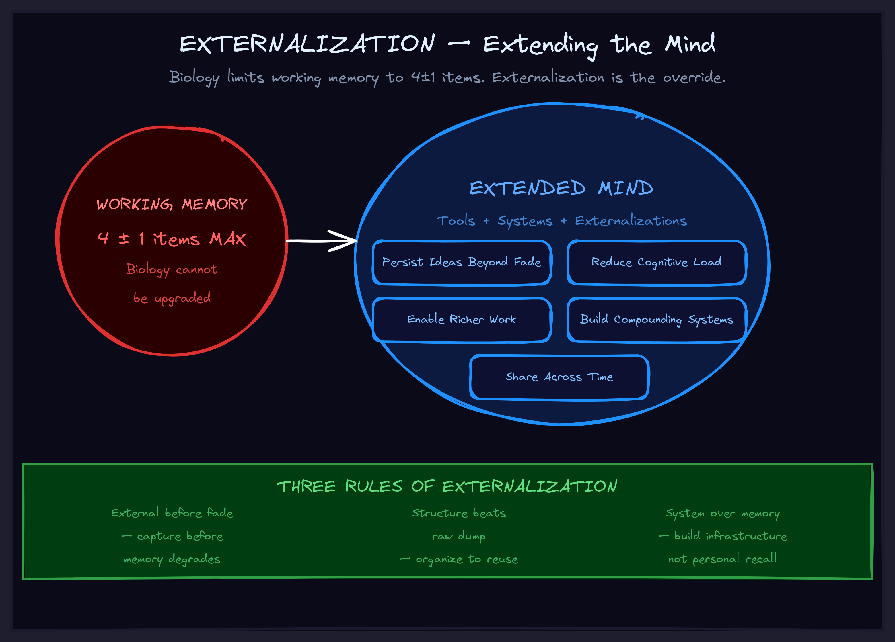

May 2026
Externalization
Your brain holds 4 things at once. Your systems can hold everything. Stop pretending otherwise.

The Insight That Died
You had it. The connection between three ideas that had been bugging you for weeks. The solution crystallized — vivid, complete, obvious in that way where you can't believe you didn't see it before.
Then something happened. A phone call. A meeting. Sleep. Lunch. Something trivial and irreversible.
Later, you tried to recall it. You remembered that you understood something. You couldn't remember what you understood. You had the label without the content. The shape of an insight without the substance.
This happens to everyone. Every day. And most people treat it as a minor annoyance.
It's not minor. It's catastrophic. Those lost insights are lost permanently. You don't get the same configuration of mental state, context, and timing twice. The insight that died in your head is gone forever.
Insights arrive, you feel certain you understand them, and later they're gone — not completely gone, but degraded. You have the label without the content. The memory of knowing without the knowledge itself. Your head is lossy storage, and you're trusting it with irreplaceable data.
The Biology You're Fighting
Your cognitive hardware:
- Working memory holds 4±1 items. Not forty. Not fourteen. Four. Plus or minus one. That's the hard limit on what you can actively manipulate at any given moment.
- Short-term memory fades in hours. That brilliant thought you had at 10 AM? By 3 PM, it's degraded. By tomorrow, it's a ghost.
- Long-term memory is reconstructive. You don't play back memories like recordings. You reconstruct them each time — and each reconstruction drifts further from the original. Your memory of the insight is a copy of a copy of a copy.
These aren't bugs. They're features — of a system optimized for survival in the Serengeti, not for building complex intellectual artifacts in the information age.
You are not going to outsmart three billion years of evolutionary optimization. You are not the exception who has a great memory. The question isn't whether your biology limits you. It's whether you've built the infrastructure to transcend the limitation.
The Extended Mind
Externalization is the act of moving cognitive content from inside your head to outside your head. Writing it down. Drawing it. Speaking it into a recorder. Putting it in a system.
The external system isn't a backup of your mind. It's an extension of your mind.
Your notebook is not a record of what you thought. It's part of how you think. Your file system is not storage — it's memory you don't have to reconstruct. Your task manager is not an organizational tool — it's working memory slots you don't have to burn.
This reframe matters because it changes how you invest. If your external systems are "just notes," you treat them casually. If they're literally part of your cognitive architecture, you design them seriously. You maintain them. You invest in their quality the same way you'd invest in your education or your health.
Five things externalization gives you that biology can't:
- Persistence. What you write today exists tomorrow, unchanged. Memories fade. Artifacts don't.
- Capacity. Working memory: 4 items. A well-organized system: unlimited. You stop being bottlenecked by biology.
- State independence. Internal representations depend on your current mental state. External artifacts are accessible whether you're fresh, tired, stressed, or caffeinated.
- Shareability. What's in your head is private. What's externalized can be shared, reviewed, collaborated on.
- Verifiability. Internal beliefs are hard to check. External artifacts can be examined, tested, and corrected by others — including by AI systems that can process them at scale.
The Three Rules
Rule 1: Externalize Before Fade, Not After
The capture window is short. If you have an insight and think "I'll write it down later," you're already losing it. By "later," you'll externalize a reconstruction — not the original. The fidelity is gone.
The fix: treat externalization as the last step of having the insight, not as follow-up work. Insight happens → externalize immediately → then continue. If it's not externalized, the insight isn't complete. It's a rough draft in dissolving ink.
Rule 2: Design for Retrieval, Not Just Storage
Externalization without organization is a junk drawer. You've put things outside your head — congratulations, now you can't find them. Or you find them but they're missing the context that makes them useful.
Before you externalize anything, ask: How will I find this? When will I need it? What context will I need to understand it later? Naming conventions. Consistent locations. Context markers. Cross-references. Storage without retrieval is storage without value.
Rule 3: External Is Default, Internal Is Exception
Most people default to keeping things in their head and only externalize when desperate. Invert that. Externalize by default. Keep internal only what truly doesn't need externalization.
The cost of unnecessary externalization is trivial — a few seconds of writing. The cost of missed externalization is catastrophic — a lost insight, a forgotten commitment, a degraded decision made on reconstructed memories instead of recorded facts.
When the downside of doing it is seconds and the downside of not doing it is irreversible loss, the default is obvious.
The Externalization Audit
Run this against your current work system. For each category, ask: is this externalized? Is the retrieval system working?
- Insights. When you have a breakthrough, does it get captured immediately or do you "try to remember it later"?
- Tasks. Are all your commitments in a system, or are some of them "in your head"?
- Missions and goals. Are your objectives written where you can check them, or are they "understood"?
- Decision records. When you make a significant choice, is the reasoning captured or just the outcome?
- Reference material. Can you find what you need in under a minute, or do you spend twenty minutes searching?
Gaps in this audit are gaps in your cognitive infrastructure. Every missing piece is an area where you're trusting 4±1 working memory slots and reconstructive long-term memory to do what a simple system could do better.
Why This Matters for Your Business
Every person on your team has the same biological limits. Four working memory slots. Fading short-term memory. Reconstructive long-term memory. Multiply that across a team of ten, twenty, fifty people, and the amount of institutional knowledge living only in heads — where it's degrading every hour — is staggering.
When a key employee leaves and takes their "knowledge" with them, that's an externalization failure. When a project stalls because nobody can remember why a decision was made six months ago, that's an externalization failure. When two teams build the same thing because neither knew the other was working on it, that's an externalization failure.
AI doesn't fix bad externalization — it amplifies it. Give an AI agent access to a well-externalized system and it becomes a force multiplier: it can search, synthesize, and surface exactly what's needed. Give it access to a junk drawer of notes and scattered docs and it produces confident-sounding garbage built on degraded inputs.
The companies that will win with AI are the ones that have done the externalization work first. Not because AI requires it — because thinking at scale requires it. AI just makes the gap between the externalized and the not-externalized painfully, undeniably visible.
Your cognitive capacity equals your biological capacity plus your external systems. Most people invest everything in the biological side and almost nothing in the systems side. The returns are inverted. A 10% improvement in external systems beats a 10% improvement in "focus" every single time.